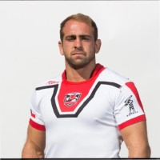

Ignacio Andrés Silva Aninat, nació en Santiago de Chile (Lo Barnechea) e 16 de febrero de 1989. Es un rugbista chileno profesional que milita en el Club Rugby Unión. A su vez, está dentro de la nómina de jugadores con el número 8 del equipo de Selknam en la Super Liga de Rugby de Sudamérica. Es el capitán tanto de la selección Selknam como de la selección chilena.
Sus logros proviene de muy temprana edad ya que solo siendo un juvenil, integro la selección de rugby de chile y participo en el Mundial del 2015 celebrado en Argentina. De ahí dio un salto, pasando por varios clubes importantes en el país, siendo destacado en cada uno de ellos, para luego llegar a integrar la selección adulta de rugby y llegar a ser capitán de esta escuadra.